［＃ページの左右中央］
ロンドン霧物語――昼間が四日闇夜に変身
［＃改ページ］
ロンドンおよび英仏海峡の天気予報は乾燥、晴れ、温暖。さらに記事をハックネスが深く読み進むと、欧州全域は概して高気圧が続き、西は気圧が上がり、海は穏やかで、今年この時季にしては格別高温とか。
ハックネスはロンドン大学の理学士、漏らさず読んだ。気象研究が
居間
摩訶不思議な方法で霧の専門家を自称していた。いつか名前を売り出そうと思っていたのは
遂に待望の機会が到来したようだ。十一月に入り、なま温かく
ハックネスの確信では当地で危機が起こり、いつか国家的な惨事を引き起こす。観測や記録から確実に、ロンドンは来たるべき二十四時間以内に濃霧に巻き込まれる。
大誤算しなければ、次の霧はとてつもなく深くなるはず。まさかその卑劣な霞がガウワー通りに見えたのは、朝食についたときだった。
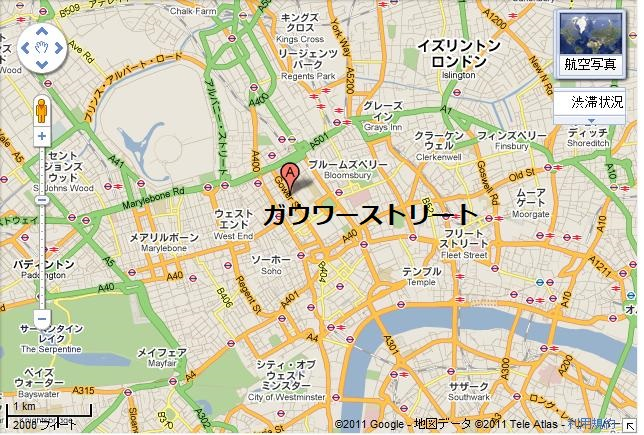
扉が開き、男が無断で乱入してきた。小柄、そり上げた鋭い顔、鷲鼻、独善的な鼻眼鏡。ハックネス先生と似てなくもないが、無いのは
「ハックネス先生、来ましたよ。いつか来る運命だったんです。テレグラフ新聞の最新版のここです。出かけて見に行くべきです。覚えていますか、一八九八年の冬、石油船が爆発した日を。先生とウエストゲートでゴルフしていました」
と言って、肘掛椅子に飛び乗った。
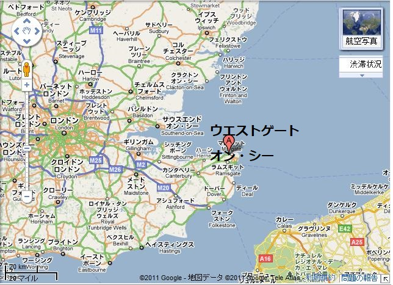
ハックネス先生が大きくうなずいた。
「エルドレッド君、忘れるもんか。もっとも船の名前は忘れたがね。大きな鉄船で夜明けごろ発火した。船長と乗組員は一人として見つからなかったな」
「全く音がせず、大量の黒煙がすさまじい影響を及ぼしました。日没の場面を覚えていますか。アルプス山脈が六個も積み重なったようでした。大壮観のみならず、身の毛がよだつほどぞっとするものでした。あのとき先生が何とおっしゃったか覚えていますか」
エルドレッドの物言いで、先生は何か感ずるものがあった。
「よく覚えておる。目に焼き付いているのは
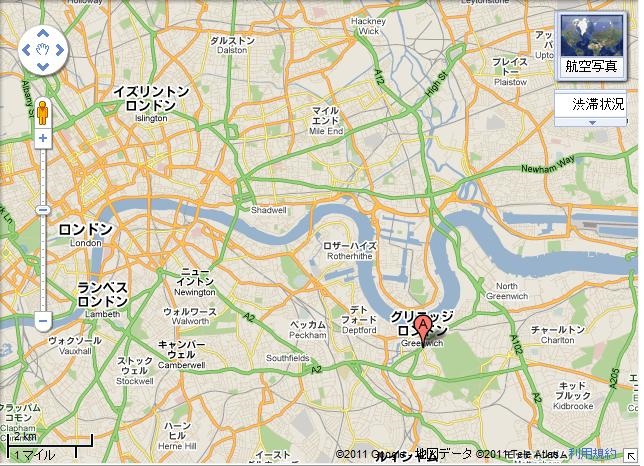
「先生は今日の濃霧を予想してなかったですか」
「確かに予想した。最新の実験装置が裏付けておる。なんで
「けさ早く川下の大きな石油タンクが出火したからです。何百万リットルという油が燃えるはずです。どんな奇跡でも火は消せません。おそらく今日も明日も暴れるでしょう。消防隊も歯が立ちません。第一に火勢が強すぎて近づけません。第二に水をかければ悪化する一方です。過去最大の火災です。残念、先生が予想されたさしもの霧も、煙の上には降りないですよ」
先生は朝食を途中で切り上げて、外套をひっかけた。この危機はロンドン市民が夢想だにしてなかった。
どぶ板通りから新聞売り子がテムズ河畔の大火災を叫んでいる。人々が大惨事を語る様子はとても冷静で、身近な事柄の合間に話す程度だった。
先生がぶつぶつ言った。
「いつものとおり簡単に降りるさ。降りれば仕方がない、降りなきゃ……いや来るさ。チャリング・クロスから追跡しよう」
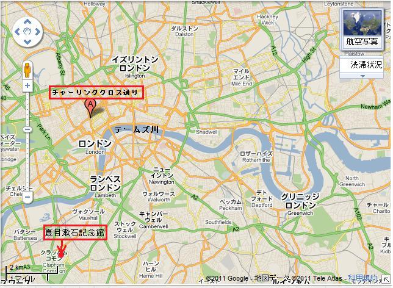
川岸をちょっと下ると、霧のカーテンが晴れた。丸い大きな太陽がくすんだ地面を照らした。南東方面で大きな黒煙の柱が天空へ伸びている。
今度はエルドレッドがぶつぶつ言った。
「あれを吸うなんて。毒でしょう。あの塊なら何トンもあります。もう五時間燃えています。あれじゃロンドン中が窒息します」
先生は答えなかった。本心では逃げたかった。あの煙柱はさらに何時間も立ち昇るだろう。だが、同時に大きなチャンスがある。ある企てをやりたくて、準備万端整えてあった。
二人は惨事現場に着いた。半径五百メートル以内は灼熱。誰も事故原因は知らないようだが、噂では油の蒸気に火がついたとか。
手の打ちようがなかった。どの消防車も近づけず、何もできなかった。巨大なタンクは石油が満杯、燃えるに任せるしかないだろう。
炎の壁がごうごう、ぼうぼうと
郊外の田舎、太陽がさんさんと降り注ぐところでは、人々が恐怖で黒雲を眺めていた。数キロメートル離れた所からは全世界の山脈がロンドン上空を覆ったように見えた。霧が次第にテムズ川の南部を覆い、
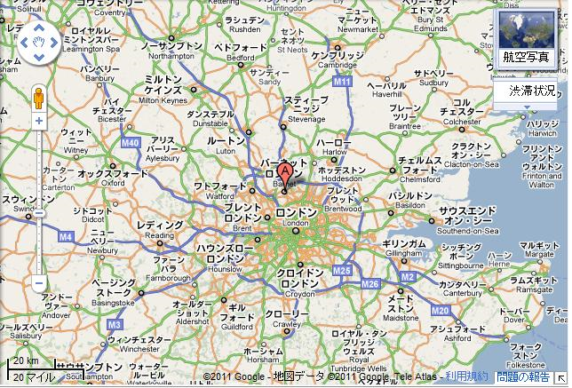
静寂と
先生はやっと
エルドレッドが尋ねた。
「先生、解決方法は？ これからどうされます？」
先生がぶっきらぼうに言った。
「昼飯だ。そのあと仕掛けをリージェント公園に見に行く。グリンファン卿の飛行機がある。それに爆発理論も。問題は実験許可を当局から得ることじゃ。警察が絶対に禁止するのはロンドン上空の爆発実験だ。だが今度は爆発させてやる。穏やかな気候ほど嬉しいものはないが、今回は……」
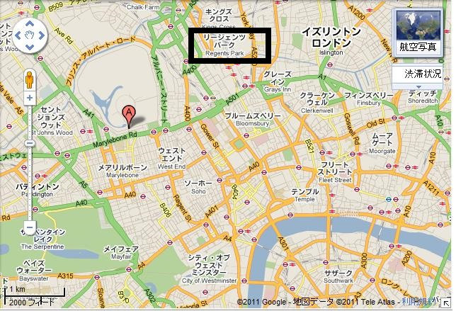
「今晩おひまですか」
とエルドレッドが
「いいや、暇じゃない。でも時間はたっぷりある。今晩はグリンファン卿の所に行く予定だ。娘さんにも会えるぞ、アービングへ行けば誰でもな。一生に一度のチャンスをつかんだ。うまく行ってほしいよ、エルドレッド君。真夜中に来てくれれば……」
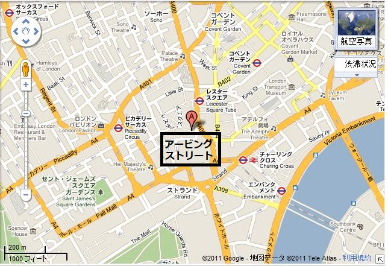
エルドレッドが息せき切って言った。
「行きますとも。立ち合いますよ。爆発案のすべてを知りたいです」
マーティン・ハックネス先生の服装はその晩、無頓着だった。失念していたのはシンシア嬢がとても黒ネクタイが好きだってこと。いつもならその意向を大いに尊重するのだが、今回はほかのことに気を取られていた。
なんら異常の
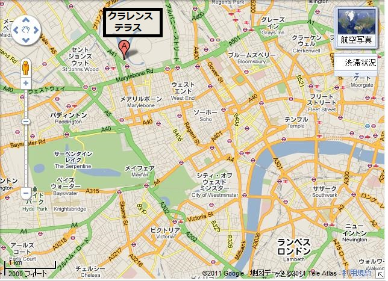
ハックネス先生が鼻をクンクン鳴らして臭いをかいだ。感じたかそう思ったか、つんと刺すような臭いがした。馬車がトラファルガー広場に着いたとき、叫び声や罵声を聞いたような気がした。突然馬車が暗闇の中に突っ込んだように見えた。
あまりに不意打ちだったので、強力な一撃となった。馬が
ハックネス先生はあわてて馬車から下りた。そそり立つ不気味な黒壁の中に馬が視界から消えた。無意識に御者が
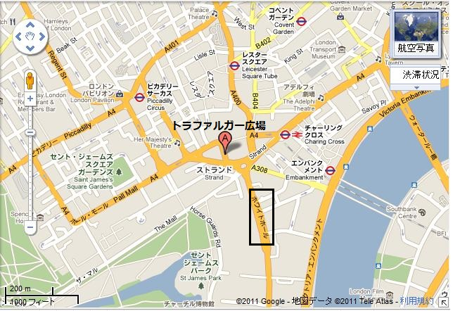
御者がつぶやいた。
「十八年、酒やめてるんで、大丈夫でさあ。お客さん、この霧をどう思いで？」
ハックネス先生はとりとめのない返事をした。立ちすくんでいると、黒い壁が
ハックネス先生が叫んだ。
「全力で行け。霧だ、燃え盛る石油の近くから出た。とにかく、すぐ逃げろ」
本当だった。黒いカーテンが持ち上がったものの、焼けた油の臭いがする。店の窓ガラスや、ランプにシミがつき、黒い雪が吹きつけたかのよう。交通は一時遮断、歩行者の一団が
＊
グリンファン卿は若い友人を見て大いに喜んだ。もしグリンファン卿が貧しくて、猛獣狩りに興味が無かったら、間違いなく科学界で栄光を浴びていただろう。何でも冒険的なものにとりつかれるたちだった。空飛ぶ機械や飛行機に入れ上げた。
クラレンス・テラス一一九番地の裏庭には大きな研究所があり、ハックネス先生が暇な時に入り浸っていた。この二人が間もなく世の中を驚かす。
ハックネス先生はシンシア嬢と親密に握手した。ネクタイを見たとき、シンシア嬢がかわいい知的な顔をしかめた。
「あら大きな
先生がいいわけをした。世辞にたけたお嬢さんだ。先生はトラファルガー広場での奇妙な出来事やテムズ川の壮大な光景も話した。自分が立てた理論も生々しく説明した。夕食中議論した。
シンシア嬢が言った。
「お話は永遠の暗黒に突入するってことね。つまり霧が下りればでしょう。でも私を脅して夜の観劇を奪おうと思っているなら大間違いよ」
まわりが一挙に暗くなったのは三人がライシエン劇場へ向け乗車した時だった。あちこちに浮かぶ刺激臭の黒い霧は煙幕のようで、霧から出て来る人々は息苦しくて咳き込んでいる。霧の帯は部分的だったので広い大通りではよけることができた。街灯柱に掛かる

シンシア嬢が悲鳴を上げた。
「なんていやな臭い。ハックネス先生、窓を閉めてちょうだい。外出させてごめんなさい。何なのこれ？」
馬車の座席の下でごそごそ動くものがあった。犬がワンワン吠えた。シンシア嬢のフォックステリア小型犬が馬車に忍び込んでいた。この子の好きないたずらよ、とシンシア嬢がいいわけ。
「この子また家に帰るわよ。キムは自分のしたことが悪いと知ってるの」
犬のキムのことはすっかり忘れ去られていたが、あとでシンシア嬢がある事情で観劇場の一階でうずくまっていたとき現れる。
ハックネス先生は執心のあまりどんな不快も感じなかった。わずかに意識したのは、電球がだんだん暗く黄色くなっていき、褐色の霞が観客席と舞台の間に侵入していることだ。
第三劇で幕が下りたとき、劇場はほとんど見通すことができなくなった。脂っぽい大きな汚物が二、三個、一階席の淑女の白い肩にぽたぽた落ちたので、同伴者は拭き掃除に大わらわ。あとには油の染みがべっとり残った。
シンシア嬢がうめいた。
「息ができないわ。家にいればよかった。まあ、電球が消えていく」
しかし電球は単に煙に巻かれているのであり、煙は一瞬ごとに益々濃くなっていく。幕が再び上がると舞台の後ろから漂ってくるものがある。劇場が褐色の
グリンファン卿がぶつくさ。
「ハックネス先生が正しかった。家にいた方がずっと良かった」
先生は無言だった。予想が当たっても、ちっとも自慢にならない。おそらくこの惨事の魔力を知る唯一のロンドンっ子だろう。あまりにも急に暗くなったので、連れのシンシア嬢が気を失っているんじゃないかと思った。
なにか黒雲からぱらぱら、汚れた黒い雪が落ちてくるようだった。シンシア嬢が一瞬立ちあがったとき、まさか優雅なドレスに油の染みがべっとり付着するとは。石油の臭いで息苦しくなった。
背後から
さらに別な黒雲が劇場に満ち、むくむく真っ黒になり、余りの暗さに鼻先三十センチ先のマッチすら見えない。恐ろしいエジプトの呪いがロンドンに
ハックネス先生がうながした。
「さあ、出ましょう。静かに行きましょう」
ほかの人々も同様に移動するようだ。なにしろ一瞬にして真っ黒になったので、危険なパニックになりようがない。しずしずと一歩ずつ着飾った聴衆たちは控えの間からホールへ、階段へと移動した。
何も見えず、何も光らず、何も交通音がない。破壊天使がロンドンに来て、人類を吸い取ったかのようだ。とてつもない大惨事が出現し、ロンドンの何百万人を
都市が
こんな考えを巡らしながらハックネス先生はライシエン劇場の
でも暗さは想像してたよりずっと深く、
だが、想像を絶するほど息が苦しいわけじゃない。余りの暗さに窒息感を覚えるためだ。依然として空気があり、蒸し暑い微風が暗闇で動き、慈悲深くも清浄な酸素が流入し、呼吸できる。常に空気が
誰もしばらく話す者はいなかった。シーンと静まり返っていた。考えれば奇妙なことだ。数キロメートル離れた
少し離れた所で犬がクンクン泣いている。女の子が迷子になっちゃったわ、と上品に叫んだ。心配した母親が返事した。この子は最初の暗黒が襲ったとき迷子になった。
幸運にもハックネス先生が見つけた。女の子の外套は
グリンファン卿を呼ぶと、声が聞こえた。シンシア嬢は哀れ気に頼りなさげに泣いている。通り過ぎるご婦人のなかにもそんな人がいた。
グリンファン卿がうめいた。
「頼むからどうしたらいいか教えてくれ。わしはロンドン通だと自任しているが、これじゃ家にも帰れない」
何かがハックネス先生の手をなめている。犬のキムだった。しめた。ハンカチを引き裂いて帯にして
「キムですよ。帰宅命令を。唯一のチャンスです。犬が家に連れて行ってくれます。素晴らしい生物は数々いますが、鼻の効く犬ほど価値があるものはいません。試してください」
「先生はどこへ行くの。どうするの」
とシンシア嬢が訊いた。声がカン高い。というのもガヤガヤとうるさいからだ。
ハックネス先生も影響を受けて上ずった。
「ああ、僕は大丈夫だ。いいかい、遅かれ早かれ起こることを確信していたんだ。だから頭脳で難局に対処するさ。警視庁に話すんだが、いつも僕のことを
グリンファン卿が犬に触って、前進させた。
キムが小さく吠えてクンクン泣いた。元気いっぱい小さな体で手綱を引っ張った。
グリンファン卿が叫んだ。
「いいぞ、キムがわかった。今晩はこの犬の小さな薬箱ほどの奇妙な脳こそが、英国の最優秀知能だ」
シンシア嬢が小声で別れを告げ、ハックネス先生は一人ぼっちになった。
しかしここに突っ立っていても無駄だ。なんとかして警視庁へ行って、当局に自分の計画を聞いてもらわねばならない。
交通が止まり、まったく危険はないし、正気ならこんな暗夜に馬を走らせるやつはいない。ハックネス先生は何も考えず、ふらふら。どの方角へ向かっているのやら。
目的地に行きたければ、感覚だけが頼りだ。やっとストランドへの道を見つけ、行きずりに場所を
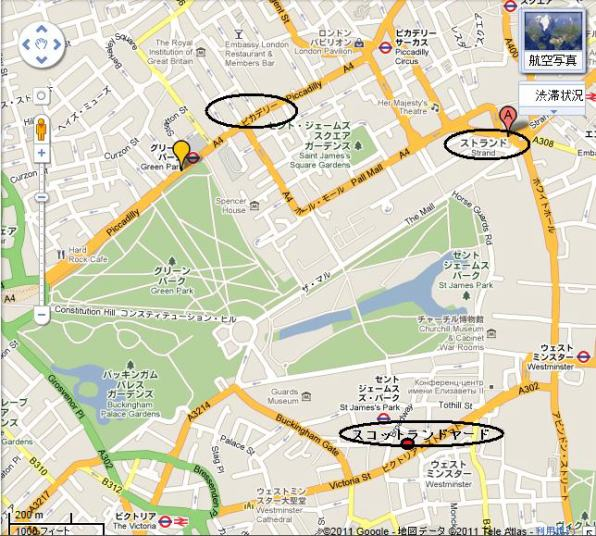
大勢が通りで深刻に立ち話している。知らない者同士、お互いに動転した気持ちをぶちまけている。一番気難しいクラブ会員すらチンピラとつるみかねない。自分達の考えなどないからだ。
ハックネス先生はわが道を進んだ。目的地に着きたけりゃ、行く先々で扉をたたいて場所を訊くしかない。応対はいつもつっけんどんだったが、良否を区別する暇はない。誰もが死ぬほど怖かった。
やっとスコットランドヤードの警視庁に着いたのは時計が午前一時半を告げたときだった。事務員が亡霊のような声でハックネス先生にウィリアムソン警部の部屋を教え、厳格な警官が腕をつかんで案内し、階段を何段も上がった。おずおずと椅子に座った。うす暗い部屋からウィリアムソン警部が語りかけた。
「お越し下さり感謝します。会いたかったですな。記憶を改めたいので、あなたの計画を訊きたい。当時大して気にとめてなかったから」
「当然そうです。警部、嘲笑の的にされた元祖・予言者のことをまだ覚えてますか。じゃあ、気にせず告白しますが、これほど恐ろしいとは予言できませんでした。こんな濃霧では計画を実行できません。歯を食いしばって耐えるしかありません。この霧が続く限り実行できません」
「でもみんな生きておる。どれくらい続きます？」
「おそらく一時間、いや一週間でしょう。警部、我々がどんな恐ろしい災難に遭遇しているか分かりますか」
警部は返事しなかった。霧が続く限り、ロンドンは包囲攻撃にさらされるばかりでなく、どの家も籠城となり、それぞれの備蓄が頼りとなる。霧がある限り、パンは焼けず、肉は運べず、ミルクや野菜も配達できない。
一日か二日こんな状態が続けば、何千という家族が餓死寸前になろう。ハックネス先生の予想はちっとも面白くなかったが、警部は一言一句に同意せざるを得なかった。
二人の男は暗闇に座り込んで、夜明けを待った。一方、多数の部下たちは各種の機械を操作して命令を待っていた。
＊
ハックネス先生が自分の部屋に転がり込んだのは朝の九時ごろだった。警視庁の実験許可を得るのは失敗した。何気なく時間を見ようと時計を探した。無かった。苦笑いだ。いっぱしの捕食階級なら優位な立場を利用して全く分らないこともない。
ハックネス先生が朝食を食べない単純な理由は台所に火をつけられないからだ。でもひと
やがて起きて気づくと時計が九時を打っている。考えを入念にめぐらし、ほかの住人に二、三
衣服を換え、油まみれのヘドロを冷水と石鹸で洗い落した。通りで大勢の人々が食料を求めている。噂では溝に死体があったとか。徒歩はのろいが、馬車が全く通らないので通行は安全だ。人々は息も絶え絶えに、降りかかった大惨禍を話した。
半径数キロメートル
災難は悪化する一方だ。六百万人がなけなしの酸素を吸っている。ハックネス先生が自分の部屋に戻ると、エルドレッドが待っていた。
「よくないなあ」
とエルドレッドがぶっきらぼうに言った
ハックネス先生が応じて、
「もちろんよくない。空気がなくなる。俺と一緒に警視庁へ行って、ウィリアムソン警部へ実験の説得を手助けしてくれ」
「何ですって。警部がまだ抵抗しているってことですか」
「でも今日は違うだろう。行こう」
警部の態度はかたくなだった。ひと言も楽観的なことは言わなかった。
その時ハックネス先生が言った。
「まさに気象を激しく乱すことで、あの致命的な霧が消えます。これこそ劇的な解決法です。もし失敗してもこれより悪くなることはありません」
「でも制御できるのか」
と警部が訊いた。
ハックネス先生が答えた。
「できると思います。もちろんリスクはありますが、長年準備してきました。明日の深夜、いやこれに関してはいつでも始められます」
ため息をついた警部は
「よろしい。もしこの為に大惨事になったら、わしは辞職を迫られる。もし拒否すれば……」
ハックネス先生がきっぱり言った。
「拒否すればほかに就職口がないどころの騒ぎではありませんよ。エルドレッド君、進めよう」
二人は漆黒の息苦しい暗闇をかき分け、よたよた、ぐったりになって、全身汗まみれになった。汚れた大気のなか、濃霧に閉じ込められ、体力と精力をすべて吸い取られたようだった。
＊
クラレンス・テラスへ行くのはいつも楽しみだったが、今度ばかりは苦痛だった。我慢と障害に耐えて、やっと目的地を見つけた。ハックネス先生が戸口で叫んだ。足音が聞こえ、シンシア嬢の声がした。
「まあ御無事で心底ほっとしたわ。悪いことばかり想像していました。霧は永久に消えないの？ ハックネス先生」
シンシア嬢は心労でべそをかいている。ハックネス先生が手を触って優しく包んだ。
「僕の大理論を実行する予定だ。エルドレッドも一緒だ。警部の許可を得たから飛行機を飛ばす。グリンファン卿はどこ？」
グリンファン卿は庭の広い研究所にいた。夢中になって機械の上にかがみこんで電球出力を増大させようとしていた。
ハックネス先生が二重反射板付きの奇妙な電球をポケットから取り出し、こう言った。
「発電機をとめて、電線をください。ここに小さな発明品を持ってきました。電気技師のブラムリーから借りました。グリンファン卿の一千ボルト発電機でろうそく四万本の光を発生できます。では」
カチッとスイッチを入れると、皆驚いて後ずさりして目を手で覆った。大量の光をまともに見ることができず、研究所をあかあかと照らす様は冬の夜明けのようだった。あらゆる用途に充分だが、目にとっては二日二晩、何も見てないのでチクチク痛い。
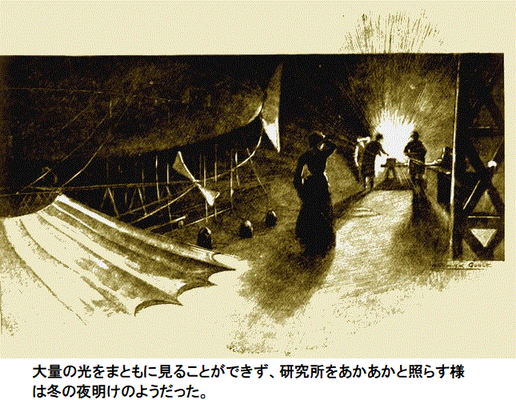
シンシア嬢の笑いが止まらない。シンシア嬢が見たのは男どもが
男どもが見たのは背の高い上品な淑女が給仕女の道化になり、真っ黒なタオルで涙顔をふいているではないか。
見たか。研究所の床いっぱいに奇妙な
問題になりそうなのはこの変な怪物をここから出すことだが、研究所の端から引き出せるので、それほど難しくない。
これがグリンファン卿の飛行機だ。卿の指揮のもと、ハックネス先生とエルドレッドの協力で作り上げた。
グリンファン卿が考え込んで言った。
「
ハックネス先生が応えて、
「そうですね。でも大都市を救いたいです。離陸は難しくないはずですし、着陸に関しては忘れないでください。ロンドン郊外へ数キロメートル行けば大気は完全に清浄です。ただ、爆発が充分強烈であってほしいです」
エルドレッドがきっぱり、
「弱気にならないでください。離陸前にたっぷり一日中仕事をしたでしょう。それに時間がありません」
グリンファン卿が勧めた。
「まず昼飯だ。ここにあるぞ。質素で冷えてるけど、ありがたいことにたくさんある。さあ、あの恐ろしい暗黒が止んで、祝福の光が再び出るぞ」
＊
真夜中、二時間後、研究所の扉を開き、飛行機を台に乗せ、庭に引き出した。かすかに点灯しているため暗さがますます際立った。三人の男たちは黙ってシンシア嬢に手を振り、飛び乗った。数秒後、ブンブンと轟音を発し、息苦しい霧へ突入していった。
ロンドンは頑固に腰を据え、耐えている。多くの家が行方不明者をじっと待っているが帰って来ず、犠牲者は道路や川、空き地や敷地や荒れ地に放置され、草に覆われた。だが、暗く長い夜の為わからない。
最初は暴力や略奪が散見された。でも盗品を持っていて何になる？ 分捕り品は売れないし、貴重なダイヤモンドも一口のパンとさえも交換できない。家にすら帰れない泥棒もおり、道路に居ざるを得ず、そこには覆いかぶさる煙幕の恐怖と、来たるべき確実な刑務所行きの怖れがあった。
話変わって、ある家で同居人の不明を嘆き悲しむ一方、それどころの騒ぎじゃないところもあった。逃げ遅れた御婦人たちや、
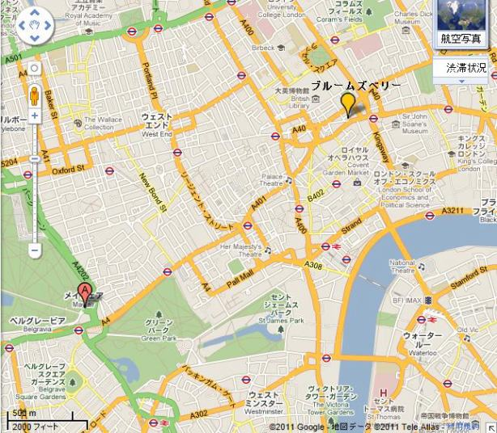
警視庁、地方当局、州議会の共同作業は目覚ましかった。でも備蓄が底をつき、大量のパンやミルクの入手は困難を極め、災害域外から搬入できなかった。
依然として貧者の苦しみは深刻で、子供たちの泣き叫び声が通りに満ちた。あと数日で、図太い神経すら参るかもしれない。誰もこんな暗闇に遭遇したことはないし、長い間正気を保っていられない。ロンドンは盲目の町になった。眠ることが、忍び寄る狂気に対する唯一の解決法だった。
暴力行為はほとんどなかった。乱暴者や残虐な男ですら、大災難を前にしておとなしくなった。やけくそになった男どもがはい出して食糧を探したが、食糧以外は求めなかった。食糧を奪う時も暴力をふるおうとしなかった。
心配性の人々の予想では、数時間でロンドンは死滅する。今度だけは自分たち側に理由があった。時がたつごとに空気は、いや空気に何が含まれようが、だんだん有毒になってゆく。想像するのは六百万人の死体だ。
災害の為に大都市はすっかり死に絶えるだろう。大多数の人々があえて二度と集まろうとしない場所、それは製造業者が忌わしい空気を頭上にまき散らすところだ。これは出稼ぎ者にとって重要な確認事項となろう。民衆が感じるこんな病的状況には切なる正当性があった。
こうしてうんざりする三日目の長い昼がやっと終わり、人々は床につき、昔ながらのしきたりで、朝によいことが起こるように祈った。最後に陽光を見てから何年経った？ 色は？
夜明け後、いくらか経って黒一色から変化があった。みんな夜明けの時間感覚を失くしていた。必死になって感覚を取り戻し、元凶の厚い幕を破ろうとした。扉を開け、待ちきれなくなって通りに出た。
突然殴られたような衝撃がいずこから来て、耳を
巨大な建物が揺れ、家具が倒れ、家々からガラスの割れる音がした。原因は単なる霧か、それとも厚い煙幕か、世界崩壊を覆い隠すカーテンか。
人々は立ちつくし、震えおののき、我を失った。すると、尋ねるそばから答えがあり、奇妙なこと、つまり現代の奇跡が起こった。暗黒の巨大な幕がはぎとられ、生の日光が現れ、驚く眼前に差し込んだ。
実験は実に危険に満ち、ついに飛行機がふらついてきた。上昇が緩やかだ。たぶん大気が薄くなったせいか。しばらく三人は口を開かなかった。何かが呼吸を圧迫しているようだ。ほとんど上昇を感じなかった。ただ浮いてくれさえすればいい。
エルドレッドが言った。
「素晴らしい光でしたよ、研究所で見たのは。でもなぜ何百個も用意しなかったんですか」
ハックネス先生がさえぎって、
「簡単な理由さ。ロンドン中で、俺の友人が貸してくれた電球がたった一個しかなかったからだよ。それに作動電圧も危険だし」
上昇している。飛行機の翼がかすかにガサガサ音を立てている。グリンファン卿が深呼吸した。
「空気が、空気が新鮮だ。気がついたか」
おいしい冷気が三人の肺に満ちた。突然の変わりように皆興奮した。強烈に笑い叫びたくなり、歌が飛び出した。
そのあと次第に、三人を乗せた亡霊のような飛行機は得体のしれないものから抜け出した。お互いがはっきりと見え、急上昇を感じた。脱出中、煙幕がまとわりつくさまは、さながら生きた
お互いを見て笑いあった。三人とも黒く汚れて油まみれ、頭から足まで脂っぽい
上空は明るく、日光が広範に照らし、丸い太陽が登り、キラキラ輝く
エルドレッドが即座に言った。
「いま町の上空三百メートルです。ケーブルを百五十メートル繰り出してください」
ワイヤ先端のフックに、ハックネス先生が高性能大型爆弾をつけた。フックの穴にもう一本別なワイヤ、つまり電線もつけた。これらを慎重におろし、ケーブル全長を垂らした。心配そうに二人がじっと見ていた。グリンファン卿は電線につないだ光沢スイッチを無造作に持っている。だが手が震えていた。
エルドレッドが頭をこくり。無言でそのときを知らせた。
グリンファン卿の人差し指が光沢ボタンを押すと、カチッと音がして、ほぼ同時に轟音と空圧が押し寄せ、飛行機を激しく揺さぶった。周りの雲が回転し、下方の
ハックネス先生が叫んだ。
「見て、あれを見て」
下を指差した。爆発力でまさに分厚い霧のカーテンに穴が開いた。白日のまばゆい光がロンドンに到達し、巨大天窓から差し込むようだった。
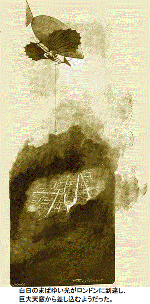
この様子を見てびっくり仰天したのがロンドン中心部の住人、家から飛び出し、地震の揺れは何だろうと思った。効果は摩訶不思議で強力、決して忘れられない。
セントポールの半径八百メートル、ロンドン市内が陽光にあふれた。人々は目をこすり、突然のまばゆさに顔を向けることができなかった。狂気して、ぞくぞくっとしたのは新鮮でうまい空気の
まばゆい光線が妙なものを照らした。どの歩道もインクのように黒く、家々の正面も松ヤニをぬったよう。道路は脂の
ラドゲートヒルには何十台という馬車があるが、馬がいない。おびただしい自動車も持ち主がいないようだ。スリが溝に座り込み、体に高価な小間物を身につけ、宝石が泥の中で光っている。品物をスッたあと霧が猛烈に広がった。いまや盗人にとって貴重品は猫に小判のようなものだ。
五分後再び幕が下りた。逃亡中のスリが動揺してまた座り込み、
だが、ロンドンはもう心配ない。飛行機の機影がちらと見え、大衆は事の成り行きを知った。すぐに次の爆発がハムステッド上空の煙幕を切り裂き、続く二時間で爆発が次々起こった。霧が解けるたびにすさまじい大歓声があがった。
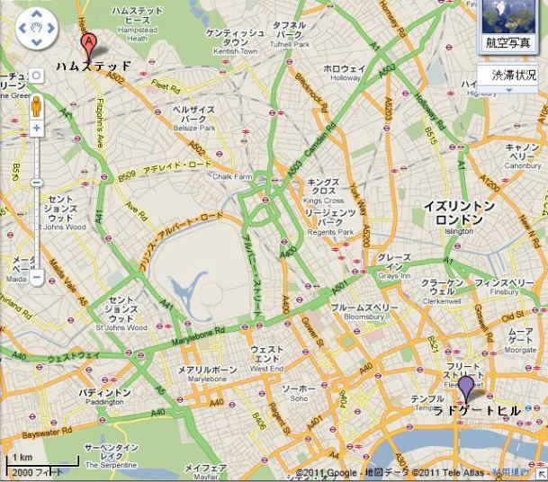
やがて一筋の光が差し込んできた。時折、眼前の両手を見ることができた。
一時間前に頭上は完全に晴れた。その後、雨が本格的に降りだした。連続爆発によって呼び起こされ、引き起こされた雨は、大砲を連続発射した
土砂降りの雨で機中の三人はずぶ濡れ。だが気にならない。新鮮でかぐわしい空気の精気が血液に満ち、爆弾を次々処理し、ついに最後の一個を使い果たした。
そして雨がロンドン中に降り注いだ。煙幕に穴が開いた所から雨が落ち、黒
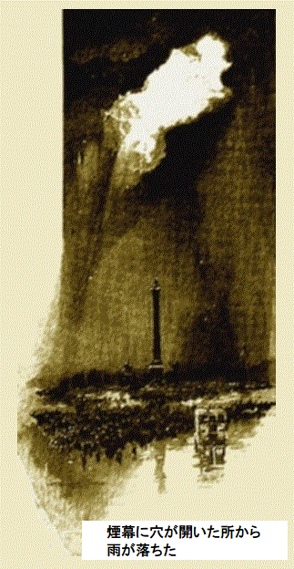
エルドレッドが叫んだ。
「雲が流れて行きます。セントポールの頭が見えます」
確かに十字架が天を突くように見える。少しずつロンドンの全景がゆっくり姿を現し始めた。
歓喜の声が上空まで届いた。先見の明と科学知識に対する賛辞であり、ロンドン救出が証明された。
実のところ、高所での爆発は無数の命を救う単なる間接手段でしかない。土砂降り雨という魔法の手品こそが真の救済だ。霧を濃縮し、煤を流水にして地上に叩きつける。
重苦しくて、泥だらけで、うっとうしくて、これをロンドン市民はぶつぶつ不満を言いつつ恩恵に浴し、いまや文句を垂れるものはいない。聖なる日光が回帰して、再び何か純粋な空気を肺に吸い込み、ただ生きている喜びをかみしめた。
誰も雨など気にしないし、全く気づかないけれど、世の中で最も汚れた煙突掃除人よりもさらに汚れ、もっと
三人が機上から下を見ると、ロンドンは狂ったようになり、雨の中でお堅い人物が乱舞する有様は学童が初雪に出会ったようだ。
グリンファン卿が口を開いた。
「降りた方がよさそうだ。そうしないと大歓迎される。個人的には朝飯を食べたい。こんなに気流が穏やかなら、リージェント公園の着陸は難しくない」
弁を開くと、飛行機が閃光鳥のように降下。通りに殺到する人々が見え、いまや連中の足音が聞こえる。遂に降りた所で見た群衆はホッテントット族が狂って叫んでいるかのようだった。
飛行機は安全に格納され、歓呼した群衆も散って行った。ロンドンは異常な臨時休みに突入。豪雨はちっとも問題じゃない。もし豪雨が大都市を救わなかったとしたら？ 道が真っ黒で人々が煤だらけに何の問題がある？ 危険は去った。
グリンファン卿が言った。
「そのうち出て行って説明しよう。その間に朝食だ。こんなことは二度と起こっちゃいかんな、ハックネス先生」
ハックネス先生も心からそう願った。
シンシア嬢があいさつにお出まし。せっけんと水をたっぷり使ってかわいく美しくなっていたが、長くは保てまい。いたるところ煤だらけだもの。
「すばらしいわ、また見えて、呼吸が出来て。夕べは今にも窒息するかと思ったわ。今日は突然極楽に来たようね」
「スス極楽だ」
とグリンファン卿がぶつぶつ。
シンシア嬢の笑みには一抹の悲観があった。
「恐ろしいわ。テーブルクロスは敷いてないのよ、役に立たないもの。でもテーブルはきれいよ、少しはましね。これからロンドンがまた完璧にきれいになるなんて、無理だわ」
悪臭がまだ大都市を覆い、痕跡が空中に漂っていた。一時ごろ雨がやみ、空が晴れた。太陽が変なものを照らし出したのにはびっくり。リージェント公園の木々が妙に分厚く化粧し、その黒さと言ったらまるで塗装したかよう。歩道も脂ぎっており、歩行者が急ぐと危険だ。
依然として喜びも確かに見られたが、黒染めの憂鬱な荒廃の為に、最強の元気ですらなえてしまう。この三日間、あらゆるものが停止状態だった。
人口密集地域では子供たちの死亡率が異常に高かった。肺や喉や胸に何らかの病を抱えていた人の死にざまは、まるでハエが寒気を一息吸ったかのようだった。
夕刊は通常通り発行され、その日はやや遅れたが、多くがつらい記事だった。ここが災害記者の腕の見せどころ、機会を逃さない。悲惨な情報をかぎつけ、臆せず徹底的に調べ上げた。
二千人以上の子供たちが、お年寄りは言うまでもなく、イーストエンドで死んだ。小さな赤ん坊は絶望的だった。
市長は直ちにロンドン市長基金を設立。やがて機能して救いになろう。他方、大量の機械が動かず清掃待ちだった。ロンドンの取引はすべて中止になった。
川や波止場にはおびただしい犠牲者が浮かんだ。多くの労働者や船員が不意打ちの天災に出会い、水に落ち、行方不明になった。ロンドンに毎日食料を運ぶ鉄路や交通が、つかの間復活したが、それでもやはり備蓄の欠乏は痛かった。
＊
「嘆かわしい状態だ。しかし、改善方法が分からん。霧を追い払うことはできたが、恐ろしい損害を与えた」
こうグリンファン卿が不機嫌に言ったのは、その晩遅く二人がリージェント公園にとことこ歩いて戻るときだった。馬車を調達するのが難しい理由は単純、ロンドンに使えるのが一台もないからだ。
エルドレッドが静かに言った。
「難局を簡単に脱出する方法があります」
相手が振り向いて耳をそばだてた。概してエルドレッドは物事をじっくり煮詰めるまで話さない。
「都心部全域で石炭を全廃すべきです。早晩そうしなければならなくなります。ロンドン中、暖房も料理も機械も、全て電気で行うべきです。そうすれば世界一健全な街になります。全てを電力で行います。何千もの煙突から有毒な黒煙が出ることはなく、大気は澄み、清純になります。ブライトンの街のように、地方当局が問題を真面目に解決しようとしているところでは電力料金がガスの半分です」
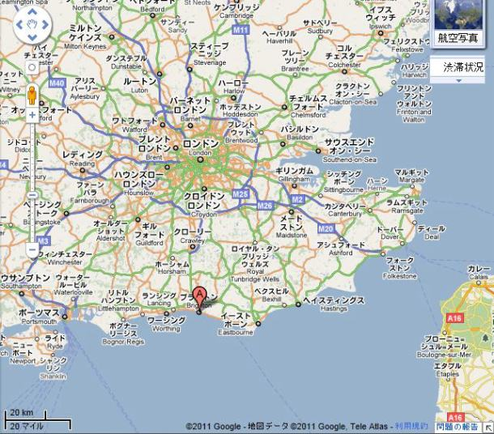
「ロンドンに設置さえすれば、こんなにならないでしょう。汚れも
エルドレッドが暗い荒れ公園で落胆して首を左右に振った。おそらく災難で命を落とした犠牲者のことを考えてだろう。みなが悲しげについて行くと、自宅の道を先導していたグリンファン卿が暮れなずむ夜に、扉をバーンと開けて入った。
了